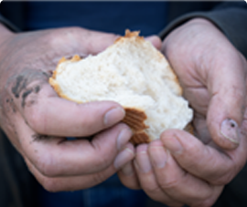

OUR INTRODUCTION
Help end hunger by reducing your food waste
Food waste is a significant global issue. According to the Food and Agriculture Organization of the United Nations (FAO), approximately one-third of the food produced in the world for human consumption is lost or wasted each year. This equates to about 1.3 billion tons of food. Food waste has a negative impact on the environment and significant social and economic consequences, as it represents a waste of resources and potential food for those in need. Food waste occurs at all stages of the food supply chain, from production to consumption. Food waste’s main causes include overproduction, inefficient supply chain management, consumer behavior, and lack of proper storage facilities.
Our Services list
Problems Faced by World

Economic
Impact
By reducing the amount of food wasted, businesses can save on production costs, and households can save on their food bills.
Food wasted
by hotels
Hotels often prepare more food than is needed to meet customer demand, leading to surplus food that goes to waste.
Reduced
storage
Without the ability to trade, there may be a lack of infrastructure for storage and transportation, leading to food waste.
Social
Impact
Food waste is a serious problem for millions of people who suffer from hunger and malnutrition. Saving food can help to reduce food insecurity.
Get to know us
Get to know us Together, We Can End Food Waste
Consumers can take steps to reduce food waste in their own homes, such as meal planning, proper food storage, and composting food scraps.NGOs can raise awareness about food waste, and provide education and resources to help individuals and organizations reduce food waste.Communities can work together to create composting and recycling programs, and support local farmers to reduce waste in the food.
Organizations Fighting Food Loss and Waste
National and international agencies have also made commitments to end food waste. One of the recently released Sustainable Development Goals (SDGs) focuses on responsible consumption and production of food

We Fight Food Waste!
Discover More00%
of the food wasted globally could feed all 795 million undernourished people in the world
00%
of all food produced globally is lost or wasted every year
00%
of root crops, fruit and vegetables produced globally is lost or wasted per year
$00
the annual cost of food wasted by the average American Family
From the blog post
Latest News & Articles Directly from Blog
Food waste is a growing problem that affects individuals, businesses, and entire societies. Each year, billions of pounds of food are thrown away, contributing to environmental degradation, economic inefficiency, and social injustice.